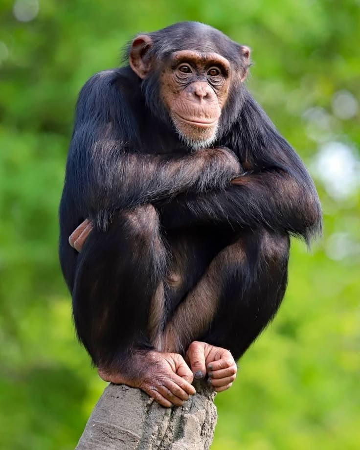
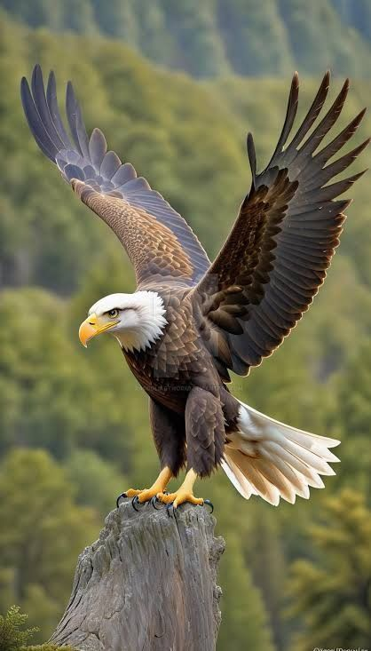
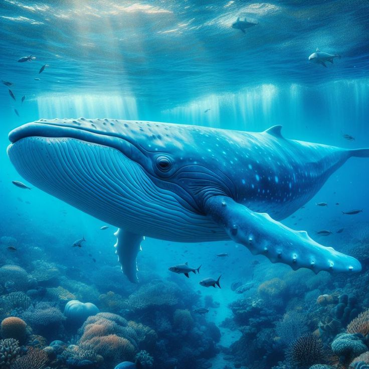
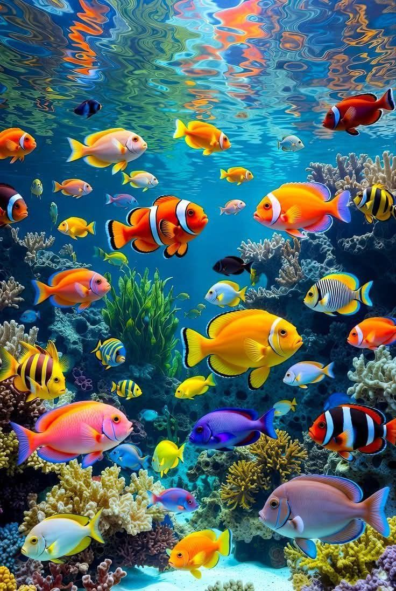
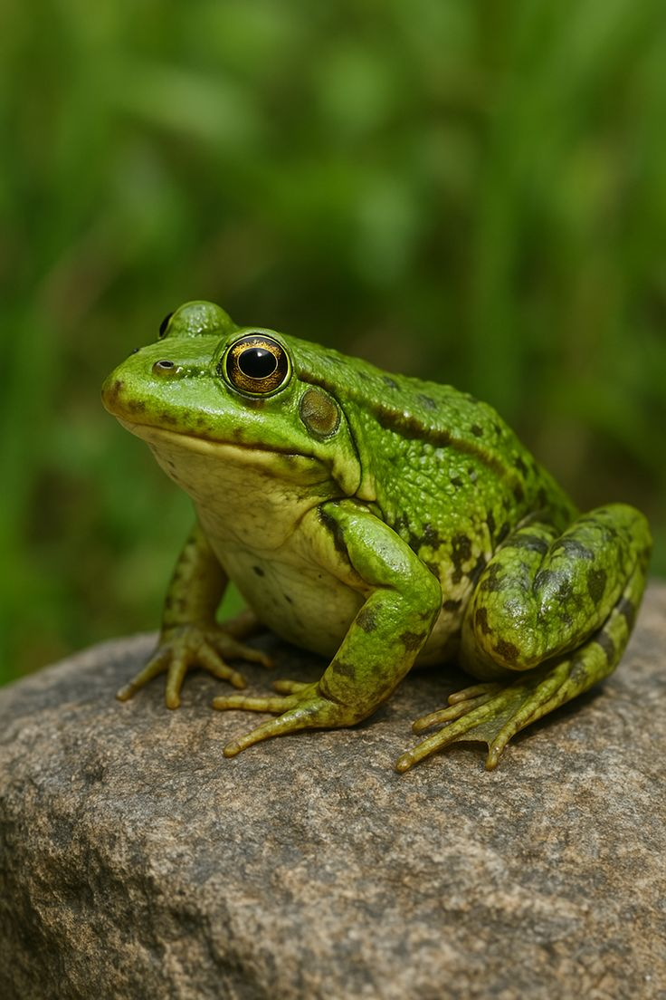

<!doctype html>
<html lang="es">
</html>
  <head>
    <meta charset="UTF-8" />
    <meta name="viewport" content="width=device-width, initial-scale=1.0" />
    <title>Animales Invertebrados</title>
    <link rel="stylesheet" href="css/estilo.css" />
  </head>
  <body id="inicio-pagina">
    <header>
      <h1>Animales Invertebrados</h1>
      <nav>
        <ul>
          <li><a href="index.html">Inicio</a></li>
          <li><a href="vertebrados.html">Vertebrados</a></li>
          <li><a href="invertebrados.html" class="active">Invertebrados</a></li>
          <li><a href="contacto.html">Contacto</a></li>
        </ul>
      </nav>
    </header>
    <main>
     <section class="anclas-nav">
  
      <p>
        Ir directamente a: <a href="#mamiferos">Mamíferos</a> |
        <a href="#aves">Aves</a>
      </p>
    </section>

      <section id="mamiferos" class="seccion-contenido">
        <h2>1. Mamíferos</h2>
        <p>
          Los mamíferos son animales vertebrados amniotas homeotermos (de
          "sangre caliente") que poseen glándulas mamarias productoras de leche
          con las que alimentan a las crías. La mayoría son vivíparos.
        </p>
      </section>
      

      <section id="aves" class="seccion-contenido">
        <h2>2. Aves</h2>
        <p>
          Las aves son animales vertebrados, de sangre caliente, que caminan,
          saltan o se mantienen solo sobre las extremidades posteriores,
          mientras que las extremidades anteriores están modificadas como alas.
        </p>

        

      <h1>3.Ballenas</h1>
        <p>
          Las ballenas son mamíferos marinos que viven en los océanos y se
          alimentan de plancton y pequeños peces.
        </p>
        

        <h2>4.Anfibios</h2>
        <p>
          Los anfibios son animales vertebrados que pasan parte de su vida en el
          agua y parte en tierra. Tienen piel blanda y húmeda, y suelen tener
          una vida semiacuática.
        </p>
        

        <h2>5.Reptiles</h2>
        <p>
          Los reptiles son animales vertebrados que se caracterizan por tener la
          piel cubierta de escamas, ser de sangre fría y poner huevos con
          cáscara dura. Incluyen a los lagartos, serpientes, tortugas y
          cocodrilos.
        </p>
        
      </section>

      <div class="contenedor-subir">
        <a href="#inicio-pagina" class="boton-subir">▲ Subir al inicio</a>
      </div>
    </main>

    <footer>
      <p>
        &copy; 2026 Electiva I - UPT de Valencia. Desarrollado con fines
        educativos.
      </p>
      <div class="redes">
        <a href="#">Facebook</a> | <a href="#">Instagram</a> |
        <a href="#">Twitter</a>
      </div>
    </footer>
  </body>
</html>
